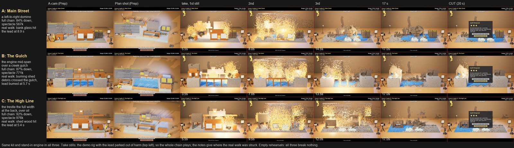
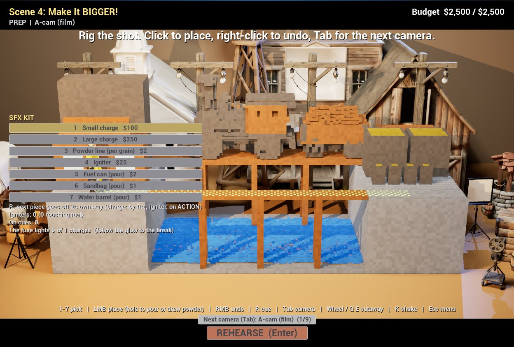
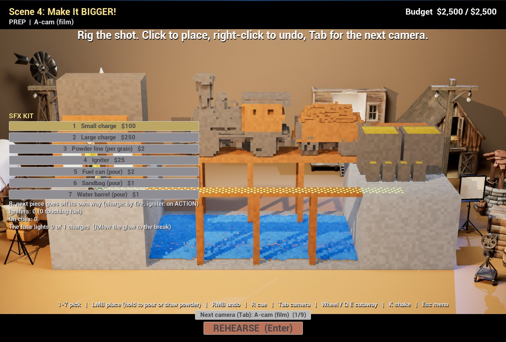
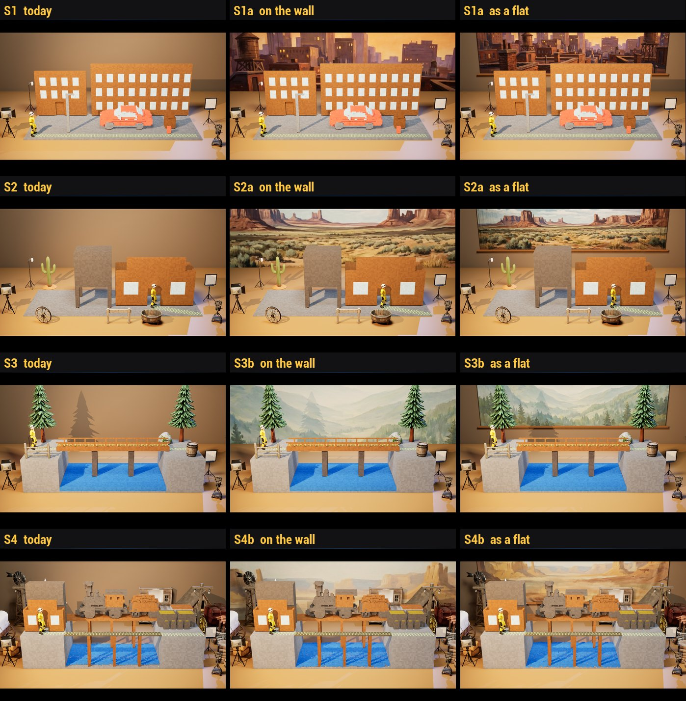
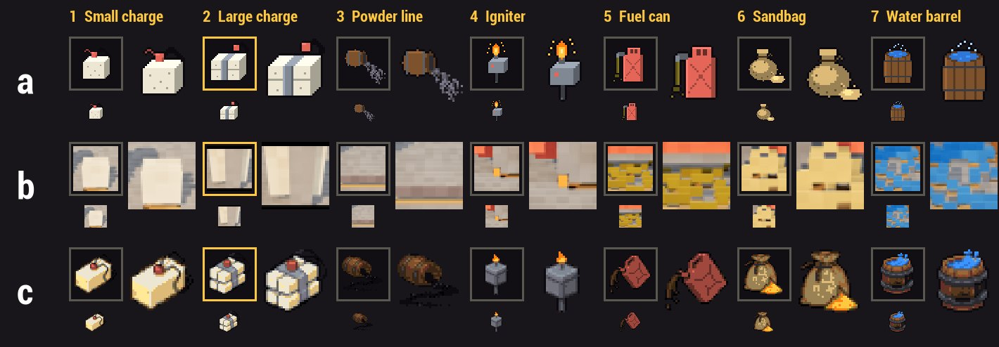
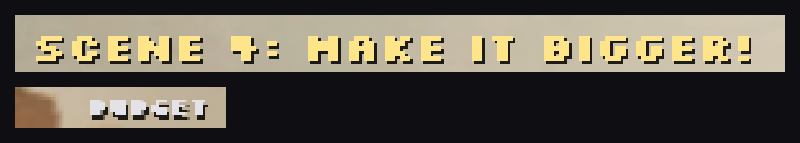
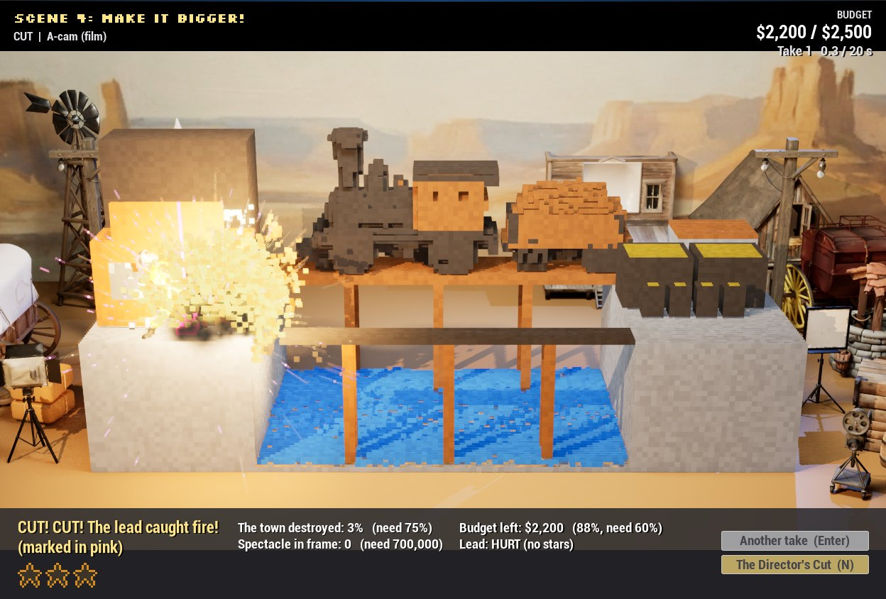
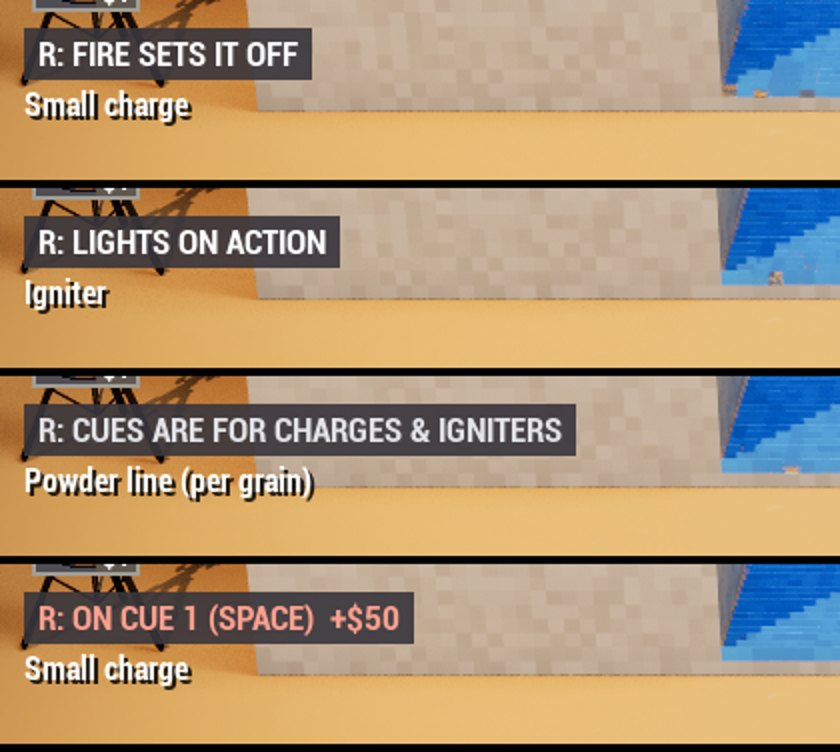
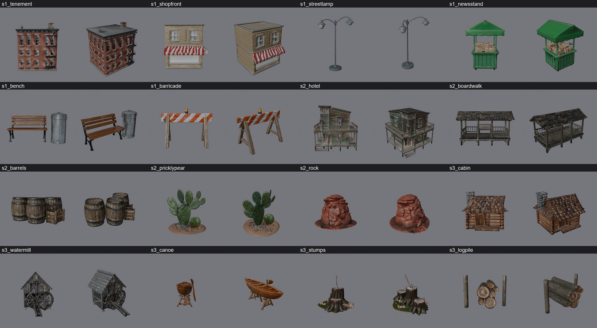
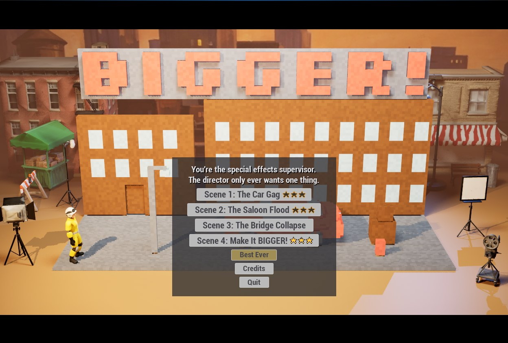

Post 2 · Friday
The finale, and a facelift
Friday: a fourth scene built around a steam train, a new face for the whole game, a stronger stuntman, and every set dressed.

Continuing from where we left off, I managed to get the game much closer to my vision. I knew I still wanted to add some content, as well as make it more intuitive and pleasant to look at. This involved some initial UI work to make things more legible and interesting, dressing the sets to really make it feel like you are making films, and finally getting the finale into the game so it can be iterated on for maximum fun and spectacle.
Scene 4: the finale
In the ideation phase for the game, I threw my ideas around and asked Claude if they were manageable for me in the four available days. During this, we came up with a few level ideas that would fit the theme as well as provide an interesting sandbox to mess around in. One that Claude had mentioned was a bank where you need to blow open a safe without burning the cash (time permitting, I like the idea), but personally I had imagined a level with a train where you get to plan how to derail or destroy it.
With both of these ideas in the back of my mind for the finale, when it came time to place it in the game I asked Claude what examples would show off every tool and function in the game. It gave me a look sheet, and option B immediately stood out to me. It looked like the perfect setup to iterate on until we manage the perfect finale. Currently, it doesn’t live up to what I have in mind, but now that I have the proof of concept down, and I’m further along on some of the parts I worried about time-wise, I plan to really focus tomorrow on bringing these scenes (especially the finale) to the next level. What I had imagined was the train actually moving, so you can destroy it while it still has some kinetic energy. Hopefully I will be able to get this to a satisfying point, time permitting.
The finale as it is has some impressive opportunities for explosions and destruction, but it also made clear that our stuntman was still a little too sensitive to lesser debris. That led to a rule change (see “One crumb too many” below), which I think has improved the gameplay of every scene. I am really hoping the balancing and further drilling down into the details I’m doing tomorrow will reveal more quirks like this, so I can keep tweaking and elevating the game. Using Claude Fable 5.2 to review the more technical or complicated parts of the game has also led to a lot of discoveries like this. I would have found them eventually myself (such as the water tower being welded to the trestle, so neither could ever tip), but it has really saved me some iteration and time.



A facelift
One part of our new look was backdrops. Having backdrops seemed like an obvious choice, and from the beginning it was something I was looking forward to implementing. What I had imagined was the backdrop being the entire wall behind our scene, but Claude had recommended a physical screen placed behind the set, so I told it to give me a look sheet. As you can see in the image below, it was an interesting idea, but I definitely preferred, and stuck with, what I had in mind. I did like going through the options and seeing them in action, though, as I can now be confident I made the right choice.
The other bit of facelift work was the UI, and things next to it. What we had on Thursday for the tools’ UI took up too much of the screen and was ugly. I knew the obvious choice was icons for the tools, with a title or descriptor on mouseover. Claude, using Aseprite and Meshy, was able to give me and implement what I wanted. It isn’t perfect yet, and I still plan to iterate until it is exactly as I imagine. This goes for the menu and other UI as well. We have the beginnings of a ‘BIGGER!’ in-game title that works for now, as well as a basic menu and UI look with some custom fonts, but this is another thing I really hope to improve on and align more with my vision tomorrow. As it stands, it is more Claude’s idea of a title, menus and UI.







What worries me
I still need to properly balance my levels and make sure they really are fun, which I am sure will be the most difficult part. With the limited time and my planned feature freeze at midnight on Saturday, I hope I will be able to test and play each level enough to really drill down into what it needs or doesn’t need.
Next
I plan to make sure all the assets are exactly as I imagine for the project. I need to improve how intuitive the menu and UI are, and how they look; I want a free-form sandbox level; I need a settings menu… there is too much to list. The first 80% of an idea is the easy part. The last 20% is where I think my design and decisions could really make or break the game.